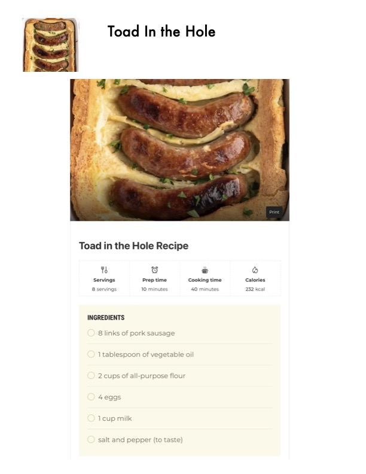

Toad In the Hole

Original cookbook page 387
Ingredients
- 8 servings 10 minutes 40 minutes
- 8 links of pork sausage
- 1 tablespoon of vegetable oil
- 2 cups of all-purpose flour
- 4 eggs
- 1cup milk
- salt and pepper (to taste)
- Calories
- 232 kcal
Instructions
- CoM 48h 6 @ = Servings Prep time Cooking time 8 servings 10 minutes 40 minutes INGREDIENTS
Recipe #387 from collection